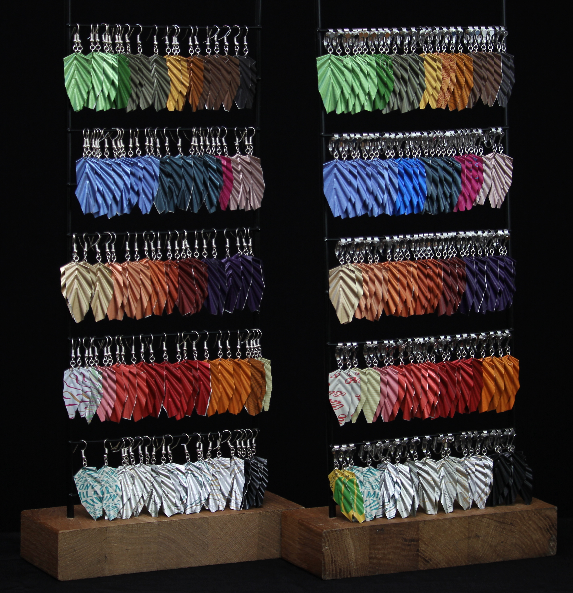
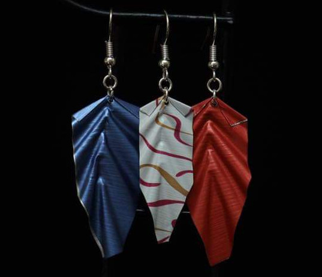
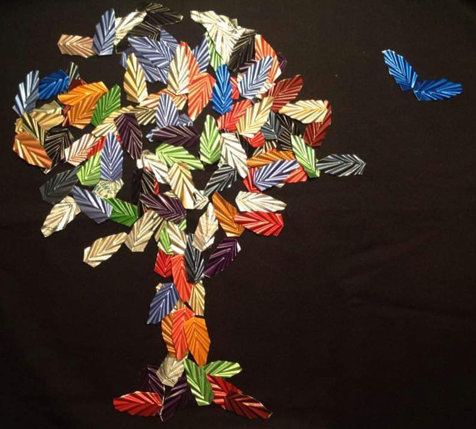

-

Diversité
Trouvez la forme et la couleur qui vous plaît parmi notre très large collection de bijoux 💎
-

Made in France
Achetez des bijoux imaginés et conçus en France, à Paris 🇫🇷
-

Responsable
Chaque bijoux est élaboré à partir de produits responsables pour notre planète 🌍
Imaginé à Paris
Cap Créa s'inscrit dans une société en transition où la recherche d'un mieux vivre rythme nos journées. Les bijoux sont réalisés à partir de capsules Nespresso, en offrant ainsi une seconde vie à l'aluminium qui les constitue.
Autrefois métal d'une grande valeur, la symbolique du bijou est double. Le recyclage de ce matériau est ici mis en valeur grâce à la créativité des concepteurs.
Contact ✉
Contactez nos créatrices
capcreabijoux@gmail.com
À propos ☕
Les bijoux sont réalisés à partir de capsules Nespresso !